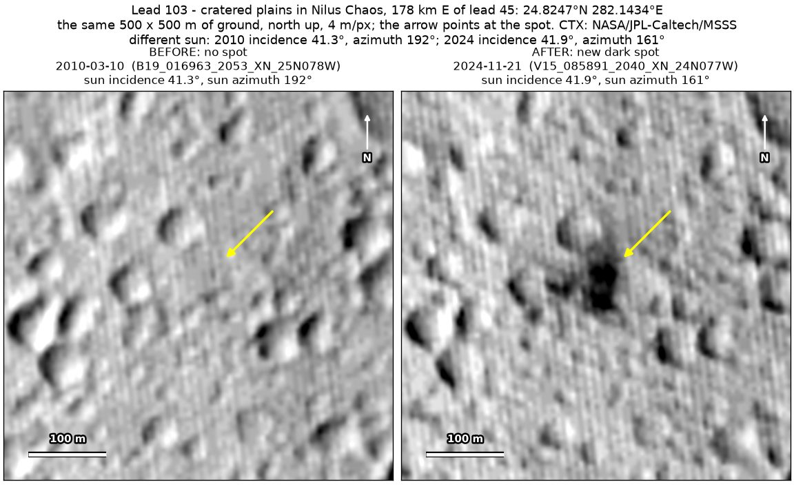
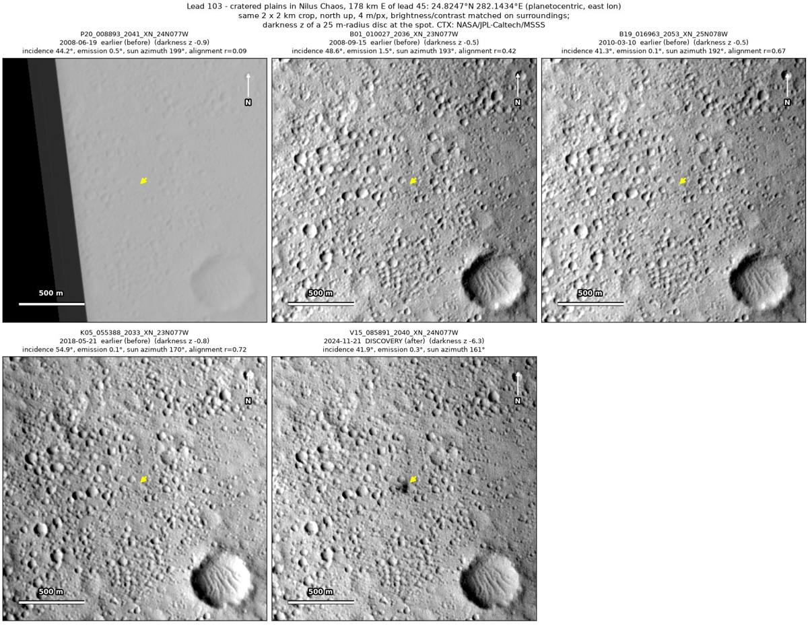
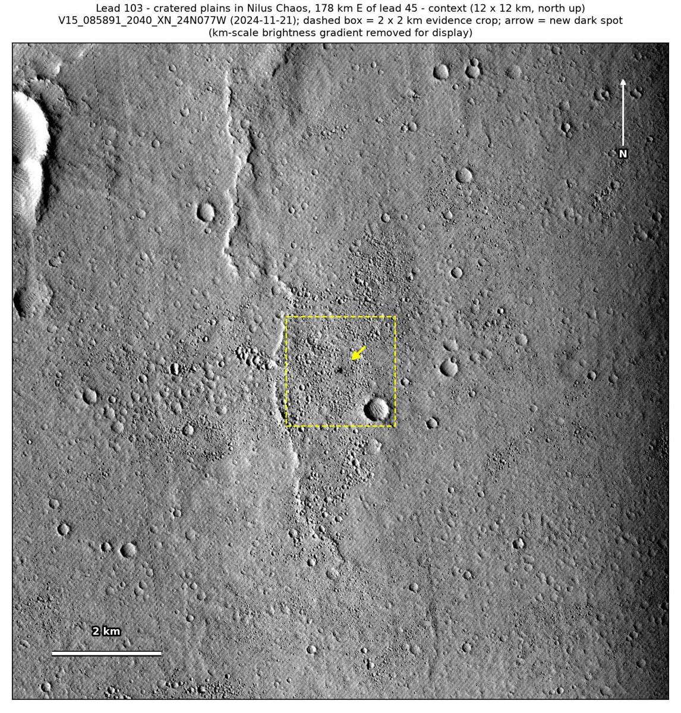

Professor of Mathematics
Paata Ivanisvili
Department of Mathematics, University of California, Irvine

← Possible new impact sites on Mars
Candidate 103: Cratered plains in Nilus Chaos, 178 km east of candidate 45
Promising · roughly 70%

What changed. A compact dark spot about 55 m across, a very dark core with a few dark specks around it, appeared on pitted and cratered plains in Nilus Chaos, between May 2018 and November 2024, in one CTX image so far.
Why it may be a new impact. Three earlier images from 2008 to 2018, all aligned, show no spot there, while a dark feature 240 m to the west-south-west shows in every one; the aligned before-and-after difference is deepest at the spot, the deepest change anywhere in the 2 × 2 km area around it, and a very dark core with specks around it is how the blast zone of a small new crater looks.
- Location
- 24.825° N, 282.143° E (77.857° W)
- Absent
- 15 September 2008, 10 March 2010 and 21 May 2018
- Present
- 21 November 2024
- Size
- Compact dark spot about 55 m across (44 × 76 m), a very dark core about 30 m across in a patchy dark zone
- Confidence
- Promising candidate; roughly 70% that it is a new impact.
- Caveat
- Only one image shows it, so an image defect or a short-lived change of the surface cannot be fully ruled out, though the spot spans about 8 × 13 CTX pixels and the image’s striping is far fainter; it could also be dark material exposed in one of the pits on these plains, though no pit shows there in March 2010. It lies outside every footprint of the high-resolution HiRISE camera; the nearest ends 29.7 km away. Like every candidate here, it is unconfirmed: see the caveat.

